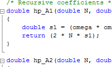

-
Seed Smart Hydroponics (2014)
For my senior capstone project, my team and I developed a smart hydroponic system that used user feedback and stochastic gradient descent to optimize plant growth. We developed a Django based server that offers both backend system control and a front end user dashboard. The hardware was based on an Arduino Mega and solid state relays for power control.
Primary Technology Used: Django, D3.js, Microcontrollers, Hardware
-
Nectar 2 (2014)
As an intern for iZotope, I helped the creative team improve fundamental frequency detection in Nectar 2, a vocal plugin suite for music professionals. I researched pitch detection algorithms and compared performance across an expansive database of sounds, and eventually succeeded to produce a hybrid algorithm that outperformed the current method by about 10%.
Primary Technology Used: Python, NumPy/SciPy/Matplotlib, C
-
iMpact (2012-2013)
What began as a class project turned into a full fledged application when some friends and I created iMpact, a unique drum app for the iPad. The application code was developed jointly by myself and two of my classmates. While originally a class project, we were encouraged by Steinway Music to consider expanding it into a commercial product. The app should be available in the App Store in the next few months.
Primary Technology Used: Objective-C, ANSI C, JSON
-

DSP for iMpact (2013)
While I was involved in the creation of the iMpact app, after the class completed I put most of my efforts to developing the DSP for the program. The app is designed to dynamically create new sounds on the fly, and as such we required a few different filters and effects. I ended up creating adjustable filters, digital delay, and ring modulation for use in the app. The end result of the work was in Objective-C, but most of the development process was done in MATLAB and ANSI C. I created the filters from analog IIR designs using the bilinear z-transform.
Primary Technology Used: ANSI C, MATLAB, Objective-C
-
Active Noise Cancellation System (2013)
I was approached by DDC to help them create an active noise cancellation system for a customer in the Chicagoland area. My team worked to develop an ANC system for a Roots style blower, an industrial blower used by warehouses and factories. My primary job was doing research to determine the most feasible possibilities. While the project is still in development (and therefore still under an NDA), our tenative plan is to use a single channel, FXLMS ANC system based off an active muffler.
Primary Technology Used: Primarily research, also used recording equipment and iZotope's RX2 software
-
ClockWise (2010-2013)
Advanced Network Devices wanted an in-house tool to control scheduling and other administrative functions on their line of IP Speaker devices. I contributed to the primary development of the program, along with one other programmer. After a year of development the software was released to the public and is now an integral part of the IP Speaker line, currently in use by large customers controlling thousands of networked devices.
Primary Technology Used: C++.NET, C#, IronPython, XML
-
AM Radio Transmitter
One of my class projects I'm most proud of, for our Electronics II final we had to build a working AM transmitter from only BJTs, resistors, capacitors, and inductors. No other components were allowed, and it was up to us to build a stable oscillator with no crystal. My group successfully built our transmitter and managed to transmit music across a distance of 10 feet.
Primary Technology Used: Spice, Through-hole components, soldering
-
IP Speaker Console (2008-2009)
When I started work for Digital Design Corporation, my first task as an intern was to create test software for their new IP Speaker devices. I took over the development of the tool and took it from a simple command line program to a full-fledged GUI based testing suite. The tool is now used in house and on site to test and troubleshoot devices.
Primary Technology Used: C++.NET, Python
-
Even More!
I've put only a few choice projects up here, but this list is by no means exhaustive. Want to hear about my homemade MIDI controller? Maybe some of my firmware work? How about the video game I made when I was in elementary school titled Superfish?
I'd love to chat more about them anytime, feel free to send me an email or give me a call. You can find my email on the homepage, or my phone number in my resume.